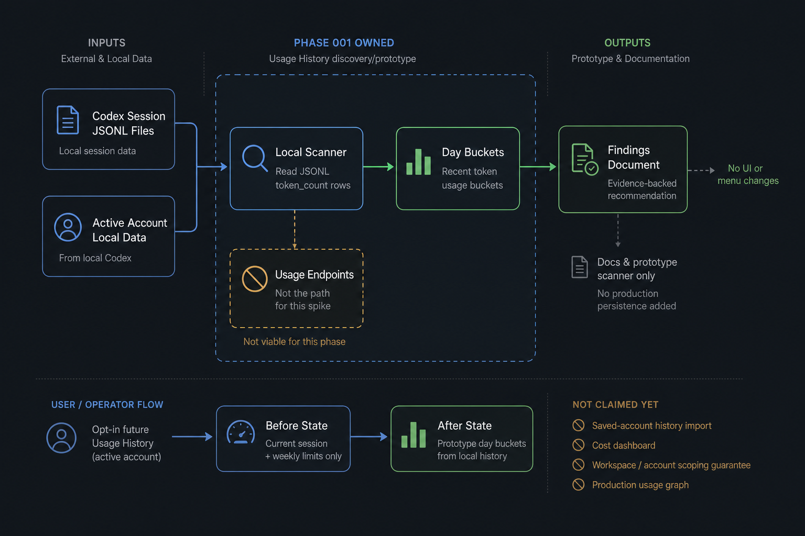
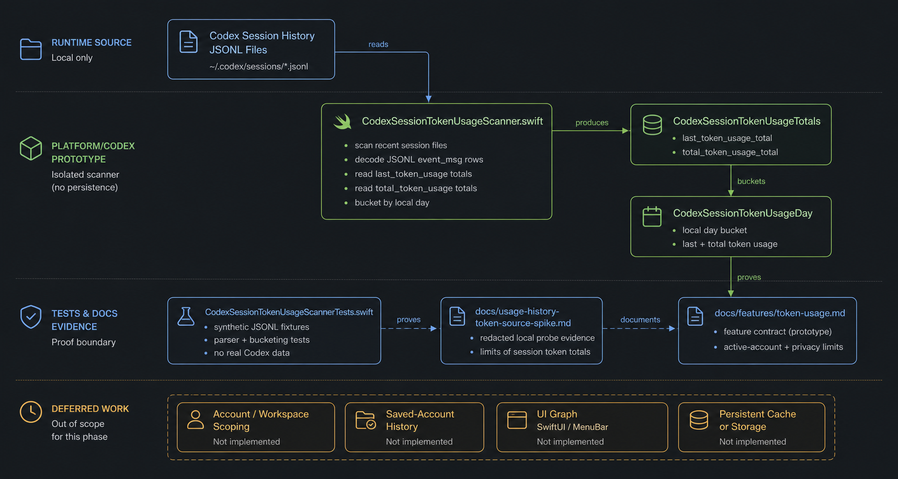

CodexPill · 001 Closeout
Prove the first safe data-source path for future opt-in token usage history.
Usage History discovery/prototype
CodexPill now has an evidence-backed prototype path for reading recent token usage buckets from local Codex session history.
Proved local Codex session history as the safe prototype source for recent active-account daily token buckets, while deferring production UI, persistence, and account/workspace scoping claims.
Product Data Pathhigh-level phase shape
{kind=link}

What Changedcapabilities and resulting code shape
Data source
Local session history became the prototype source. The spike redirected away from backend usage endpoints and proved local Codex session JSONL token_count rows as the useful historical token source for this phase. Spike findings
RGR-352 · PR #126
2 docs · +195
Findings and feature contract document source choice, useful fields, limits, and non-goals.
2 docs · +195
Findings and feature contract document source choice, useful fields, limits, and non-goals.
Platform/Codex
A scanner boundary keeps Codex session parsing out of features. The prototype reader lives under Platform/Codex and converts session rows into day buckets without adding UI or persistent Usage History storage. Scanner
RGR-352 · PR #126
1 source file · +267
The scanner is isolated from SwiftUI/MenuBar code and follows the existing Codex adapter boundary.
1 source file · +267
The scanner is isolated from SwiftUI/MenuBar code and follows the existing Codex adapter boundary.
Test proof
Synthetic parser coverage protects the privacy boundary. Tests use synthetic JSONL shapes rather than committed live session samples, covering totals, malformed rows, and day-window behavior. Tests
{kind=link}

Evidenceclaims and proof strength
| Claim | Evidence | Strength | Closeout note |
|---|---|---|---|
| The reviewed implementation landed exactly at the merge-ready head. | Review result and PR metadata both name 075774e79f089bfe2134a443b5b106e463a187e0; main was fast-forwarded to that SHA. | strong | PR #126 is merged with merge commit equal to the reviewed head. |
| Automated verification passed. | GitHub CI Test passed before landing; local landing gate make test passed with 534 tests in 63 suites. | strong | No UI/live verification was required for this prototype. |
| The phase stayed inside privacy and prototype boundaries. | Synthetic fixtures were used for tests, findings avoid raw session samples, and no production graph, menu UI, background collection, or persistent storage was added. | strong | Raw auth and private response material remain out of committed artifacts. |
| Future product direction still needs a scoping decision. | The report documents account/workspace scoping as ambiguous and saved-account querying as unsupported without future design. | partial | This is intentional phase learning, not a shipping blocker. |
Trust Boundarywhat can and cannot be claimed
Safe to say
- Prototype source: Local Codex session JSONL token-count rows can support recent daily token bucket prototypes when those rows exist.
- Boundary: Codex session parsing is isolated under Platform/Codex, with features consuming only shaped token bucket output later.
- Safety: The landed artifacts use synthetic fixtures and aggregate findings, not committed raw auth, raw sessions, prompts, responses, account IDs, hostnames, or private paths.
Do not overclaim
- Account scope: The phase does not prove whether history is Codex-specific, account-wide, workspace-scoped, or org-scoped in every environment.
- Saved accounts: The phase does not support querying non-active saved accounts without a future isolated-auth or switching design.
- Product UI: No production graph, menu cell, preferences entry, background collection, cost dashboard, or persistent Usage History store shipped.
Follow-Upnext planning boundary
Refine opt-in Usage History before UI work. Define storage policy, active-account copy, empty/error states, local history retention caveats, and whether the account/workspace scoping ambiguity is acceptable for a future user-facing feature.